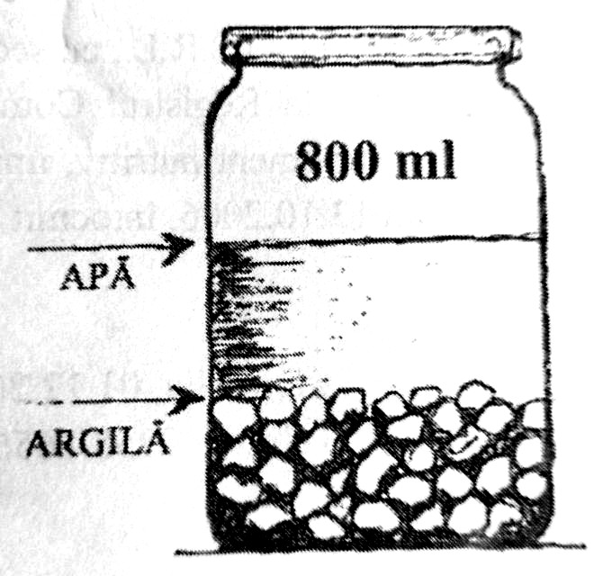

Argila Algo - mod de administrare
Uz intern - Prepararea argilei Algo
Intr-un pahar de sticla sau o cana de portelan se pun 100-150ml apa. Se adauga o lingurita plina cu argila sau un bulgaras de argila de marimea unei nuci mici. Argila sub forma de bulgarasi nu trebuie faramitata, intrucat se dizolva singura in apa. Pregatirea argilei se face din ajun: se lasa de seara pana dimineata, cand este amestecata bine cu o spatula de lemn si se bea rapid foarte tulbure, pe stomacul gol, cu 30 de minute inainte de masa. Sedimentul (ca un zat de cafea) se arunca si se pregateste apa cu argila pentru masa urmatoare. Acest procedeu se repeta de 3 ori pe zi, inaintea meselor importante. Esential este sa se bea apa argiloasa foarte tulbure inainte de masa, nu dupa masa. Cei care postesc sau nu mananca dimineata ori seara, pot consuma argila linistiti, fara a manca nimic dupa aceea. Este important sa nu se foloseasca in manipularea argilei metalul sau plasticul, ci numai sticla, portelanul sau lemnul.
Argila Algo la copii
Pentru copii de orice varsta (incepand de la o luna de viata), tratamentul este acelasi ca si la adulti, dar dozele de argila se reduc la jumatate.
Uz extern
Argila poate fi utilizata sub forma de cataplasme pentru:
- gusa
- noduli tiroidieni
- noduli mamari
- prostata
- dureri articulare
Prepararea cataplasmei
Din argila si putina apa se face o pasta groasa, consistenta, care se aplica pe locul bolnav in grosime de 0,5 - 1 cm, fie direct pe piele, fie pe un tifon. Cataplasmele se aplica de 2 - 3 ori pe zi, timp de 2 - 3 ore, sau se lasa de seara pana dimineata.
Masca de frumusete
Se ia un castravete mic, care se rade pe razatoare mica. Se stoarce sucul, in care se dizolva o lingurita de argila sau un bulgaras, amestecandu-se pana se obtine o pasta omogena. Se intinde uniform pe toata fata, se lasa 10-15 minute sa se usuce bine, apoi se spala fata cu apa calduta. In cazul acneei, pe langa cura interna, masca va fi aplicata zilnic.
Cura intensiva cu argila.
Aparitia antibioticelor de sinteza chimica, foarte puternice, a determinat aparitia unor germeni patogeni tot mai rezistenti. In aceste conditii este necesara folosirea unei doze marite de argila dupa urmatoarea schema:
Intr-un borcan de 800 ml se pune seara argila pana la 1/3 si pn la 2/3 apa. Ramane 1/3 borcan gol.
Se pune capacul si dimineata se agita foarte bine si se bea apa cat mai tulbure pana cand ajunge
namol in gura.
In timpul zilei, de cate ori apare senzatia de sete se pune apa in borcan peste argila ramasa,
se agita si se bea apa cat mai tulbure. Pana seara se adauga 6-10 pahare de apa (ideal ar fi sa se
consume aproximativ 2 litri de apa tulbure cu argila in cursul unei zile). Seara se arunca sedimentul.
Procedura se repeta zilnic pana dispar toate simptomele bolii (5-15 zile).
Apoi se continua cura obisnuit de 3 ori pe zi.
Cura de baza cu Argila Algo
Cura de baza este obligatorie pe durata a 3 saptamani, timp in care se bea apa argiloasa foarte tulbure, de 3 ori pe zi.
Cura de intretinere cu Argila Algo
Cura de intretinere se continua in urmatoarele 4-6 luni luandu-se doar o doza dimineata, timp de 10 zile consecutiv in fiecare luna. in functie de vechimea bolii, de varsta, de stresul acumulat, de conditiile de munca si de viata ale fiecaruia, cura de intretinere poate varia de la 10 zile pe luna la 15-20 de zile sau, in cazurile mai grave, cateva luni la rand fara intrerupere. Daca dupa cura de baza problemele nu sunt rezolvate, aceasta poate fi prelungita cu 1-2 saptamani. Supradozarea nu are efecte secundare.
Cura cu Argila Algo in timpul tratamentelor alopate
Cand bolnavul este dependent de medicamente (pentru boli cardiovasculare sau diabet) este necesar ca la inceputul tratamentului sa nu se renunte la ele. Se vor controla atent tensiunea arteriala sau glicemia la 3-4 zile, iar cand acestea incep sa scada, se va micsora treptat doza de medicamente, proportional cu scaderea tensiunii sau a glicemiei, la indicatiile medicului curant, pana cand medicatia nu va mai fi necesara. Persoanele care au facut un timp tratamente antibiotice se vor vindeca mai greu, iar durata tratamentului (atat a curei de baza, cat si a curei de intretinere) va fi mai lunga. Este important ca in timpul curei de argila sa nu se consume antibiotice deloc. Se vor lua doar medicamentele strict necesare.
Recomandari
La prepararea argilei Algo se va folosi numai apa de izvor, apa de fantana sau apa plata.
Daca in primele zile de tratament urina si scaunul vor prezenta modificari (miros urat, usoara constipatie
sau diaree, urina cu sediment, tulbure si inchis la culoare), nu trebuie sa se intrerupa tratamentul! Atunci
se elimina toxinele si organismul se purifica, urmand ca dupa aceasta perioada sa inceapa faza de vindecare.
Contraindicatii
Argila nu are nici un efect secundar, deci nu poate face nici un rau. Ca orice cura naturala,
poate provoca ca o aparenta deteriorare a stari generale a organismului in prima faza (7-10 zile), ca urmare a
eliminarii toxinelor din organism.
Daca in primele zile de tratament urina si scaunul vor prezenta modificari (miros urat, usoara constipatie
sau diaree, urina cu sediment, tulbure si inchis la culoare), nu trebuie sa se intrerupa tratamentul! Atunci
se elimina toxinele si organismul se purifica, urmand ca dupa aceasta perioada sa inceapa faza de vindecare.
Restrictii alimentare
In timpul curei de argila exista doua restrictii alimentare:
- sa nu se consume grasimi animale: carne de porc gras, untura, slanina (se poate consuma
carne macra de orice fel, unt, margarina, lactate);
- sa nu se consume alcool.
Comanda Argila Algo
Pentru comenzi in SUA
Anca & Gabriel Iordacheanu
1925 West Maple Rd.
Troy, MI 48084
Phone: (248) 822-9999
wheatgrassandsprouts.com
Pentru comenzi in Canada
Ina - JT Impex Canada LTD.
Phone: (647) 201-2275
E-mail: info@clayforlife.com
www.clayforlife.com
Recomandari
Tulburari digestiveulcer gastro-doudenal
gastrita cronica
colita, enterocolita
rectocolita, hemoroizi
pancreatite cronice
hepatite cronice
colecistite
constipatie
diaree, dizenterie
infectii urinare
nisip si calculi renali
insuficienta renala
diabet zaharat tip 2
hiper / hipotiroidie
noduli tiroidieni
noduli mamari
spasmofilie
Pacienti cu ciroza in faza terminala, cu speranta de viata de cateva saptamani, s-au vindecat complet in cateva zile